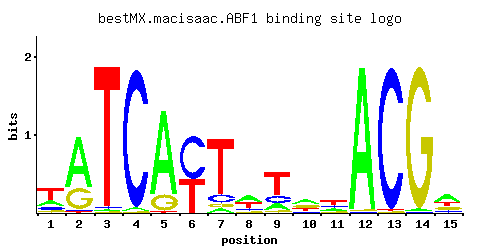

ABF1
YKL112W, SBF1, REB2, OBF1, BAF1
DNA binding protein with possible chromatin-reorganizing activity involved in transcriptional activation, gene silencing, and DNA replication and repair
Best-performing DNA-binding model.

View and copy the recommended matrices ↘
A | 0.231 0.678 0.006 0.019 0.830 0.002 0.054 0.395 0.156 0.417 0.224 0.980 0.002 0.012 0.459 C | 0.132 0.017 0.012 0.975 0.004 0.565 0.113 0.159 0.191 0.127 0.267 0.008 0.982 0.004 0.105 G | 0.119 0.295 0.004 0.004 0.160 0.001 0.059 0.099 0.048 0.270 0.116 0.010 0.008 0.982 0.198 T | 0.518 0.010 0.978 0.002 0.006 0.432 0.774 0.347 0.605 0.186 0.393 0.002 0.008 0.002 0.238
A | 23 67 0 1 83 0 5 39 15 41 22 98 0 1 45 C | 13 1 1 97 0 56 11 15 19 12 26 0 98 0 10 G | 11 29 0 0 16 0 5 9 4 27 11 1 0 98 19 T | 51 1 97 0 0 43 77 34 60 18 39 0 0 0 23
A | -0.33 0.75 -3.98 -2.82 0.95 -5.08 -1.78 0.21 -0.72 0.26 -0.36 1.12 -5.08 -3.28 0.36 C | -0.31 -2.36 -2.71 1.69 -3.81 1.14 -0.47 -0.12 0.06 -0.35 0.39 -3.11 1.70 -3.81 -0.54 G | -0.41 0.49 -3.81 -3.81 -0.12 -5.19 -1.12 -0.60 -1.32 0.41 -0.44 -2.89 -3.11 1.70 0.10 T | 0.48 -3.47 1.12 -5.08 -3.98 0.30 0.88 0.08 0.64 -0.54 0.21 -5.08 -3.69 -5.08 -0.30
Alternative candidate matrices 5
Historical matrix candidates from the original ScerTF database. Expand a source to inspect its original logo, scores, and matrix values.
ABF1Badis et. al.P = 7.66e-132View matrix ↘
ABF1Foat et. al.P = 2.26e-140View matrix ↘
ABF1Harbison et. al.P = 8.70e-141View matrix ↘
ABF1Pachkov et alP = 1.19e-129View matrix ↘
ABF1Zhu J and MQ ZhangP = 1.53e-45View matrix ↘
Gene-level annotations and interactions.
Genes bound in ChIP-chip experiments 549 genes
YAL016W, YAL023C, YAL041W, YAL042W, YAL043C, YAL043C-A, YAL053W, YAL054C, YBL007C, YBL032W, YBL033C, YBL038W, YBL039C, YBL041W, YBL042C, YBL056W, YBL057C, YBL079W, YBL080C, YBR011C, YBR029C, YBR030W, YBR077C, YBR078W, YBR080C, YBR101C, YBR109C, YBR110W, YBR122C, YBR124W, YBR129C, YBR146W, YBR198C, YBR199W, YBR211C, YBR212W, YBR222C, YBR224W, YBR225W, YBR283C, YBR284W, YBR286W, YBR290W, YBR293W, YCL001W, YCL004W, YCL005W, YCL011C, YCL016C, YCL017C, YCL031C, YCL045C, YCR001W, YCR003W, YCR053W, YCR082W, YCR092C, YCR093W, YDL010W, YDL012C, YDL020C, YDL026W, YDL028C, YDL032W, YDL035C, YDL051W, YDL052C, YDL070W, YDL072C, YDL073W, YDL074C, YDL081C, YDL084W, YDL105W, YDL106C, YDL116W, YDL122W, YDL145C, YDL159W, YDL160C, YDL189W, YDL190C, YDL193W, YDL195W, YDL208W, YDL209C, YDL229W, YDR001C, YDR002W, YDR027C, YDR035W, YDR120C, YDR121W, YDR130C, YDR144C, YDR145W, YDR194C, YDR195W, YDR207C, YDR208W, YDR233C, YDR234W, YDR245W, YDR266C, YDR280W, YDR283C, YDR284C, YDR285W, YDR295C, YDR296W, YDR312W, YDR326C, YDR327W, YDR329C, YDR330W, YDR339C, YDR340W, YDR359C, YDR361C, YDR365C, YDR365W-A, YDR365W-B, YDR367W, YDR384C, YDR385W, YDR397C, YDR398W, YDR404C, YDR405W, YDR408C, YDR409W, YDR410C, YDR422C, YDR430C, YDR432W, YDR433W, YDR454C, YDR456W, YDR462W, YDR463W, YDR527W, YDR543C, YEL017C-A, YEL017W, YEL037C, YER017C, YER026C, YER071C, YER072W, YER089C, YER090W, YER111C, YER112W, YER124C, YER125W, YER158C, YER165W, YER166W, YFL017W-A, YFL018C, YFL047W, YFL048C, YFR010W, YGL010W, YGL011C, YGL039W, YGL077C, YGL106W, YGL107C, YGL122C, YGL169W, YGL172W, YGL173C, YGL192W, YGL194C, YGL195W, YGL222C, YGL228W, YGL229C, YGL253W, YGR053C, YGR054W, YGR056W, YGR059W, YGR119C, YGR128C, YGR129W, YGR144W, YGR183C, YGR185C, YGR186W, YGR187C, YGR204W, YGR215W, YGR231C, YGR232W, YGR240C, YGR242W, YGR252W, YGR253C, YGR268C, YGR270W, YGR282C, YHL002W, YHL003C, YHL004W, YHL007C, YHL027W, YHL028W, YHL029C, YHR019C, YHR020W, YHR041C, YHR042W, YHR051W, YHR064C, YHR065C, YHR066W, YHR077C, YHR078W, YHR080C, YHR081W, YHR090C, YHR115C, YHR116W, YHR161C, YHR162W, YHR199C, YHR200W, YIL003W, YIL004C, YIL026C, YIL031W, YIL032C, YIL035C, YIL036W, YIL037C, YIL048W, YIL135C, YIL138C, YIL144W, YIL145C, YIL174W, YIL175W, YIR010W, YIR023W, YJL003W, YJL004C, YJL008C, YJL053W, YJL062W, YJL063C, YJL069C, YJL104W, YJL110C, YJL111W, YJL152W, YJL153C, YJL174W, YJL176C, YJL183W, YJL201W, YJL202C, YJR006W, YJR045C, YJR046W, YJR058C, YJR059W, YJR062C, YJR063W, YJR064W, YJR088C, YJR089W, YJR093C, YJR094W-A, YJR104C, YJR105W, YJR116W, YJR127C, YJR137C, YJR138W, YKL004W, YKL005C, YKL007W, YKL008C, YKL012W, YKL013C, YKL014C, YKL015W, YKL016C, YKL019W, YKL020C, YKL028W, YKL029C, YKL039W, YKL040C, YKL041W, YKL047W, YKL048C, YKL060C, YKL078W, YKL094W, YKL098W, YKL099C, YKL135C, YKL143W, YKL144C, YKL167C, YKL172W, YKL177W, YKL179C, YKL182W, YKL190W, YKL191W, YKL192C, YKL195W, YKL196C, YKR015C, YKR016W, YKR029C, YKR030W, YKR038C, YKR046C, YKR047W, YKR056W, YKR057W, YKR059W, YKR068C, YKR069W, YKR075C, YKR081C, YKR082W, YLL011W, YLL012W, YLL013C, YLL033W, YLL034C, YLL044W, YLL046C, YLR003C, YLR023C, YLR024C, YLR025W, YLR029C, YLR030W, YLR055C, YLR056W, YLR095C, YLR096W, YLR117C, YLR131C, YLR163C, YLR164W, YLR174W, YLR179C, YLR180W, YLR192C, YLR201C, YLR202C, YLR203C, YLR204W, YLR222C, YLR229C, YLR254C, YLR259C, YLR260W, YLR264W, YLR292C, YLR293C, YLR294C, YLR295C, YLR296W, YLR330W, YLR347C, YLR349W, YLR370C, YLR371W, YLR373C, YLR375W, YLR396C, YLR399C, YLR400W, YLR401C, YLR402W, YLR453C, YLR454W, YML012W, YML013C-A, YML081W, YMR005W, YMR033W, YMR060C, YMR061W, YMR066W, YMR078C, YMR079W, YMR092C, YMR093W, YMR125W, YMR129W, YMR197C, YMR198W, YMR200W, YMR216C, YMR217W, YMR235C, YMR236W, YMR260C, YMR280C, YMR281W, YMR296C, YMR297W, YNL004W, YNL005C, YNL036W, YNL037C, YNL044W, YNL057W, YNL059C, YNL063W, YNL064C, YNL083W, YNL084C, YNL085W, YNL111C, YNL112W, YNL113W, YNL114C, YNL115C, YNL116W, YNL117W, YNL118C, YNL119W, YNL121C, YNL138W, YNL139C, YNL140C, YNL149C, YNL183C, YNL189W, YNL207W, YNL209W, YNL212W, YNL213C, YNL243W, YNL244C, YNL250W, YNL251C, YNL255C, YNL258C, YNL267W, YNL287W, YNL306W, YNL307C, YNL312W, YNL313C, YNL321W, YNL322C, YNL337W, YNR020C, YNR021W, YNR035C, YNR037C, YNR038W, YNR046W, YNR052C, YNR053C, YOL026C, YOL034W, YOL036W, YOL068C, YOL076W, YOL077C, YOL116W, YOL133W, YOL135C, YOR020C, YOR027W, YOR045W, YOR056C, YOR057W, YOR086C, YOR098C, YOR099W, YOR116C, YOR117W, YOR145C, YOR147W, YOR157C, YOR158W, YOR167C, YOR168W, YOR170W, YOR205C, YOR206W, YOR207C, YOR208W, YOR213C, YOR224C, YOR225W, YOR231W, YOR261C, YOR262W, YOR309C, YOR310C, YOR322C, YOR343C-A, YOR343C-B, YOR354C, YOR357C, YOR358W, YPL001W, YPL002C, YPL012W, YPL013C, YPL036W, YPL037C, YPL104W, YPL105C, YPL146C, YPL159C, YPL160W, YPL161C, YPL179W, YPL228W, YPL232W, YPL242C, YPR017C, YPR018W, YPR045C, YPR046W, YPR063C, YPR064W, YPR104C, YPR128C, YPR129W, YPR137W, YPR148C, YPR154W, YPR165W, YPR176C, YPR178W, YPR184W, YPR186C, YPR187W, YPR190C, YPR191W, YPR202W, YPR203W
Genes affected by TF deletion 371 genes
YBR032W, YBR034C, YDR366C, YDR404C, YER178W, YHL044W, YGR282C, YIL116W, YJR080C, YJR020W, YKR077W, YLR220W, YML114C, YMR045C, YMR046W-A, YOL013W-A, YOR259C, YAL007C, YBR158W, YBR160W, YBR191W, YGL009C, YHR143W, YJL119C, YLR027C, YLR058C, YDR301W, YBR035C, YCR013C, YCL054W, YDR034C-A, YDR365W-B, YER177W, YGL204C, YGR279C, YHL045W, YIL147C, YJR017C, YJR082C, YJR051W, YOL014W, YOR194C, YJR002W, YAL036C, YAL008W, YBR155W, YBR159W, YGL012W, YGR122C-A, YHR142W, YHR145C, YHR179W, YJL048C, YJL052W, YJL086C, YLR089C, YLR028C, YPL048W, YBR098W, YDL037C, YDR158W, YDR100W, YDR525W-A, YFL010W-A, YGR065C, YIR034C, YJR149W, YLL060C, YLR374C, YMR103C, YOL104C, YOL106W, YOL138C, YBL023C, YBL027W, YDL188C, YER026C, YGL075C, YGL107C, YIL015C-A, YIL048W, YIL018W, YIL050W, YKL168C, YKL170W, YMR316W, YBR061C, YBR095C, YBR067C, YBR097W, YDR127W, YDR159W, YDR461W, YFL010C, YHR021C, YHR050W, YHR026W, YKL017C, YMR102C, YNL146W, YOL103W-B, YPR019W, YBL058W, YBR254C, YDR309C, YDR340W, YER023W, YER083C, YER057C, YGR211W, YGR243W, YIL015W, YIL051C, YKL142W, YLR157C, YNL338W, YBR012C, YBR012W-B, YCR021C, YDR410C, YDR444W, YGL244W, YHR001W-A, YIL088C, YJR089W, YKR049C, YLR256W, YNL058C, YNR071C, YAL044C, YBR163W, YBR199W, YDL108W, YJL121C, YLR098C, YML006C, YMR228W, YOR385W, YPL059W, YOR391C, YBL091C, YCR018C-A, YCL064C, YDR011W, YDR015C, YDR043C, YDR379W, YDR411C, YHL021C, YIL085C, YIL117C, YIL087C, YIL091C, YJR027W, YJR029W, YKR052C, YNL055C, YOR230W, YJR148W, YAL043C-A, YAR009C, YBR162W-A, YBR164C, YBR166C, YBR200W, YBR232C, YGR161C-D, YGR161W-B, YML007W, YOR010C, YOR078W, YDL039C, YDR168W, YDR171W, YDR537C, YDR476C, YFL018C, YGR038C-B, YGR039W, YHR029C, YIR036C, YJL026W, YLR380W, YLR350W, YPR028W, YBL001C, YBR263W, YBR295W, YCL028W, YDR284C, YGL143C, YGL081W, YHR215W, YIL060W, YJL217W, YLR162W, YBR069C, YBR103W, YCR085W, YDL008W, YDL012C, YDR505C, YDR536W, YGR008C, YHR030C, YJL027C, YLR343W, YLR349W, YMR083W, YBL032W, YBR290W, YCL029C, YDL163W, YDL229W, YER088C, YER033C, YGL144C, YGL082W, YGL084C, YGL116W, YIL053W, YJL186W, YJL158C, YJL222W, YKL179C, YKL150W, YPL087W, YBR046C, YBL103C, YIL162W, YJR032W, YLR259C, YGR109W-B, YKL096W, YIL157C, YOL030W, YBR170C, YBR238C, YGR109W-A, YHR157W, YBL007C, YBR142W, YFL026W, YFL059W, YGR019W, YGR049W, YKL030W, YLL044W, YLR356W, YMR120C, YOL152W, YNL071W, YBL070C, YBL009W, YBL041W, YBL011W, YBR267W, YBR273C, YGR260W, YBR141C, YBR143C, YBR145W, YDR178W, YGR074W, YJL037W, YKL029C, YLR355C, YMR085W, YOL119C, YOR332W, YPR002C-A, YBL036C, YBL069W, YBL040C, YBL010C, YBR266C, YDR321W, YDR354W, YGR259C, YJL196C, YKL183W, YNR044W, YNL322C, YPL129W, YER091C, YDR094W, YER138C, YGL258W, YKR065C, YNL073W, YOL041C, YOL072W, YKL114C, YNL054W, YAR033W, YAL060W, YBR215W, YBR247C, YDR210W-D, YDR214W, YGL001C, YBR055C, YBL107W-A, YBR057C, YDR029W, YER138W-A, YGL226C-A, YJR105W, YJR043C, YJR077C, YKR096W, YNL072W, YNL104C, YPL257W-B, YBR210W, YBR242W, YBR212W, YBR244W, YBR246W, YBR216C, YBR248C, YEL066W, YFR055W, YLR452C, YOR056C, YPL044C, YDL023C, YDL054C, YDR156W, YHR105W, YHR046C, YKL005C, YKL035W, YKL008C, YLR334C, YMR158C-B, YOL098C, YOR343C-B, YCL005W, YCL040W, YCL042W, YER051W, YGL159W, YGR238C, YDL022W, YCR100C, YDL055C, YDR121W, YDR517W, YFL062W, YFL033C, YHR104W, YHR075C, YHR047C, YHR108W, YIR025W, YJL046W, YLL053C, YLL057C, YMR153W, YOL165C, YER079W, YGR203W, YGR235C, YIL009C-A, YIL041W, YJL200C, YJL174W, YML079W, YML107C, YML051W
Genes supported by both experiments 34 genes
YAL043C-A, YBL007C, YBL032W, YBL041W, YBR199W, YBR212W, YBR290W, YCL005W, YDL012C, YDL229W, YDR121W, YDR284C, YDR340W, YDR365W-B, YDR404C, YDR410C, YER026C, YFL018C, YGL107C, YGR282C, YIL048W, YJL174W, YJR089W, YJR105W, YKL005C, YKL008C, YKL029C, YKL179C, YLL044W, YLR259C, YLR349W, YNL322C, YOR056C, YOR343C-B
Predicted TF–TF partners 12 genes
BAS1, GCN4, HSF1, MBP1, PDR1, REB1, RPN4, STB1, STB3, SUM1, SWI4, SWI6